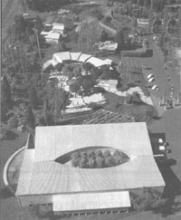
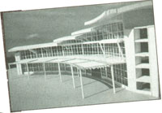
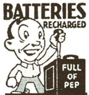

BITS AND PIECES
One company makes a commitment to the planet's future.
Picture a place where you can park your electric car next to a charging station, spend the night in an alternative energy-powered bed and breakfast, and peer through the walls around you to see the progressive techniques used to build them. Real Goods, Inc., of Ukiah, CA, a source for alternative energy information and products since 1978, is well on the way to creating this world at its Hopland Solar Living Center, on a site once used as a dumping ground.
The learning center and museum opens midsummer and will house a retail store, a bed and breakfast, and the company's headquarters. Visitors will be able to look into the structures and examine building materials through "truth windows" placed throughout as well as examine hands-on displays, giant composters, bread-breaking solar ovens, solar ice makers, and a biodigester of human waste. "We want people to see the efficiency and rational behind sustainable development and alternative energy," said Jeff Oldham, project director. "We w ant them to touch it, feel it, and see why it was chosen. We want them to see that it makes sense."
Real Goods chose Sim Van der Ryn, the former California state architect under Governor Jerry Brown, as its architect. For phase one, Sim designed a 5,000-square-foot building that resembles a curved bird wing. The northern, non-load-bearing walls are being constructed from rice strawbales (R value 50) and the southern, window-filled walls are supported by steel panels. These newly designed panels-made of 100 percent recycled steel-have a Styrofoam core wrapped in steel mesh, allowing for insulating air space between the core and the steel frame. Straw bale construction-a sensible option in other states-currently can't meet California strength tests, so bales will be used along with post-and-beam construction for non-load-bearing walls only.
Landscaping is the jewel of the project, with woodland, wetland, dryland, and grassland covering the site. A stream runs along the property, meandering through a pyramid of bamboo mounted with photovoltaics that power the pump system and into two ponds used for recreation and agriculture. The Hopland location, which parallels Highway 101, is a mixed blessing: high visibility and easy access also means noise. A series of earth berms and "living walls" of plant life create an oasis of quiet along this busy road.
The site is created to be self-sustaining. At least 90 percent of the energy needs will be met by passive solar power; the remaining will be wind generated. Hydrogen power may come into play down the road. PG&E (Pacific Gas and Electric) encouraged Real Goods to install radiant coils in the floor for insurance, but Oldham feels sure they won't be needed: "This building will be so well built and designed that I don't think we're going to need cooling or heating systems."
Electric an d natural gas automobile owners aren't in the habit of saying "fill `er up" at the local service station. These proud individuals willingly sacrifice the ease with which the rest of the mobile public goes about their business by making a commitment to alternative energy. But they're not alone. While they won't be joining others at the pump in the near future, they've just received a little roadside aid in the form of the Alternative Fuels for Vehicles Supplies and Services Directory.
Over 200 businesses are listed in the sourcebook, all offering supplies and services for alternative fuel vehicles (AFVs) nationwide. It also holds reference information about related organizations and publications. While the New York State Energy Authority created the book with business fleets in mind, it proves handy for individuals too. For your free copy, call 1-800-423-7283.
|
 |
 |
 |